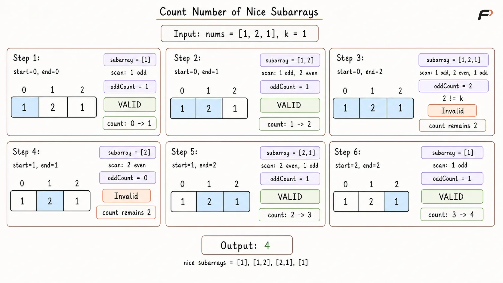
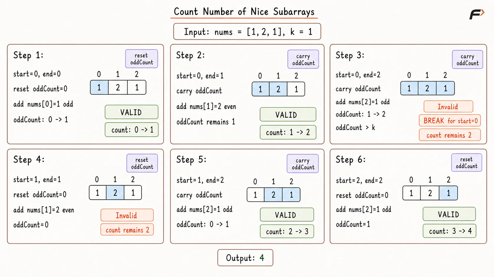
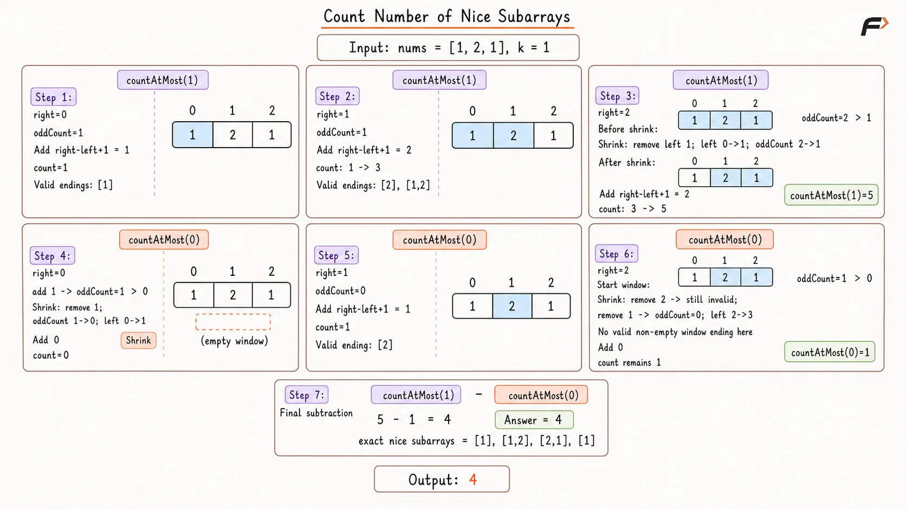

Count Nice Subarrays with Exactly K Odd Numbers
Given an integer array nums and an integer k, return the number of nice subarrays.
A nice subarray is a contiguous subarray that contains exactly k odd numbers.
A subarray is a contiguous part of the array.
Example 1
Input: nums = [1, 1, 2, 1, 1], k = 3
Output: 2
Explanation: The nice subarrays are [1, 1, 2, 1] and [1, 2, 1, 1]. Both contain exactly 3 odd numbers.
Example 2
Input: nums = [2, 4, 6], k = 1
Output: 0
Explanation: There is no odd number in the array, so no subarray can contain exactly 1 odd number.
Example 3
Input: nums = [2, 2, 2, 1, 2, 2, 1, 2, 2, 2], k = 2
Output: 16
Explanation: Every valid subarray must contain exactly 2 odd numbers.
Brute Force Approach
Every possible subarray can be checked independently. For each selected range, count its odd elements from scratch and increase the answer when that count equals k.
This guarantees that every nice subarray is found, but overlapping ranges repeatedly process the same elements.
Algorithm
The size of the array is stored in n. If n is 0, 0 is returned because no subarray can be formed from an empty array.
A helper function is used to count odd numbers inside a subarray from start to end. This keeps the brute force logic clear because every subarray is checked separately.
Inside the helper function, the elements from start to end are traversed. Whenever an element is odd, the odd count is increased.
A variable count is initialized with 0. This stores the total number of nice subarrays found so far.
Two loops are used to generate every possible subarray. The first loop chooses the starting index start, and the second loop chooses the ending index end.
For every subarray, the helper function returns the number of odd elements. If this odd count is exactly equal to k, count is increased by 1. After all subarrays are checked, count is returned.
Dry Run

Count Number of Nice Subarrays Brute Force Dry Run.png
Solution
#include <bits/stdc++.h>
using namespace std;
class Solution {
private:
// Counts odd numbers inside the selected subarray.
int countOdds(const vector<int>& nums, int start, int end) {
int oddCount = 0;
// Check every element inside the selected range.
for (int i = start; i <= end; i++) {
// Increase the count when the current value is odd.
if (nums[i] % 2 != 0) {
oddCount++;
}
}
return oddCount;
}
public:
// Counts subarrays containing exactly k odd numbers.
int numberOfSubarrays(vector<int>& nums, int k) {
int n = nums.size();
// No non-empty subarray can be formed.
if (n == 0) {
return 0;
}
int count = 0;
// Choose every possible starting index.
for (int start = 0; start < n; start++) {
// Choose every possible ending index for the current start.
for (int end = start; end < n; end++) {
int oddCount = countOdds(
nums,
start,
end
);
// Count the subarray when it contains exactly k odd values.
if (oddCount == k) {
count++;
}
}
}
return count;
}
};
int main() {
vector<int> nums = {1, 1, 2, 1, 1};
int k = 3;
Solution solution;
cout << solution.numberOfSubarrays(nums, k)
<< endl;
return 0;
}Complexity Analysis
Time Complexity: O(N³), where N is the size of the array. There are O(N²) possible subarrays, and counting odd numbers inside each subarray can take O(N) time.
Space Complexity: O(1), because only a few variables are used and no extra data structure is required.
Better Approach
Instead of recounting odd elements for every range, fix start and maintain oddCount while end moves right.
Because extending a subarray can never decrease its number of odd elements, expansion can stop once oddCount > k.
Algorithm
The size of the array is stored in n. If n is 0, 0 is returned because no subarray can exist.
A variable count is initialized with 0. This stores the number of subarrays that contain exactly k odd numbers.
The array is traversed using start as the starting index of the subarray. For every start, oddCount is initialized with 0 because a new subarray is being built.
The end pointer moves from start to the end of the array. If nums[end] is odd, oddCount is increased.
If oddCount becomes exactly equal to k, the current subarray from start to end is nice, so count is increased by 1.
If oddCount becomes greater than k, the loop stops for this start. This is safe because adding more elements can only keep the odd count same or increase it, never decrease it. After all starting positions are checked, count is returned.
Dry Run

Count Number of Nice Subarrays Better Appraoch Dry Run.png
Solution
#include <bits/stdc++.h>
using namespace std;
class Solution {
public:
// Counts nice subarrays using a running odd count from every start.
int numberOfSubarrays(vector<int>& nums, int k) {
int n = nums.size();
// No non-empty subarray can be formed.
if (n == 0) {
return 0;
}
int count = 0;
// Choose every possible starting index.
for (int start = 0; start < n; start++) {
int oddCount = 0;
// Extend the current subarray while maintaining its odd count.
for (int end = start; end < n; end++) {
// Include the current value when it is odd.
if (nums[end] % 2 != 0) {
oddCount++;
}
// Count the range when exactly k odd values are present.
if (oddCount == k) {
count++;
}
// Further expansion cannot reduce the number of odd values.
if (oddCount > k) {
break;
}
}
}
return count;
}
};
int main() {
vector<int> nums = {1, 1, 2, 1, 1};
int k = 3;
Solution solution;
cout << solution.numberOfSubarrays(nums, k)
<< endl;
return 0;
}Complexity Analysis
Time Complexity: O(N²), where N is the size of the array. For every starting index, the ending index may move toward the right until the odd count becomes greater than k.
Space Complexity: O(1), because only variables like oddCount and count are used.
Optimal Approach
Counting exactly k odd elements directly is inconvenient because even values can create several valid starting positions.
Instead, count subarrays with at most k odds and subtract those with at most k - 1 odds. A sliding window can count each at-most group efficiently because shrinking from the left reduces or preserves the odd count.
Algorithm
A helper function countAtMost is created to count the number of subarrays that contain at most limit odd numbers. If limit is less than 0, 0 is returned because a subarray cannot contain a negative number of odd elements.
Inside countAtMost, three variables are initialized: left is set to 0 to represent the left boundary of the window, oddCount is set to 0 to store the number of odd numbers in the current window, and count is set to 0 to store valid subarrays.
The right pointer moves from 0 to n - 1. If nums[right] is odd, oddCount is increased because this odd number is now included in the window.
If oddCount becomes greater than limit, the window is shrunk from the left. While shrinking, if nums[left] is odd, oddCount is decreased. Then left is moved forward.
After the window becomes valid, every subarray ending at right and starting from any index between left and right contains at most limit odd numbers. So, right - left + 1 is added to count.
Finally, the answer is returned as countAtMost(k) - countAtMost(k - 1), which gives the number of subarrays containing exactly k odd numbers.
Dry Run

Count Number of Nice Subarrays Optimal Appraoch Dry Run.png
Solution
#include <bits/stdc++.h>
using namespace std;
class Solution {
private:
// Counts subarrays containing at most the given number of odd values.
int countAtMost(vector<int>& nums, int limit) {
// A subarray cannot contain a negative number of odd values.
if (limit < 0) {
return 0;
}
int left = 0;
int oddCount = 0;
int count = 0;
// Expand the window using each index as the right boundary.
for (int right = 0; right < nums.size(); right++) {
// Count the new value when it is odd.
if (nums[right] % 2 != 0) {
oddCount++;
}
// Shrink until the window contains at most limit odd values.
while (oddCount > limit) {
// Remove an odd value from the count when it leaves.
if (nums[left] % 2 != 0) {
oddCount--;
}
left++;
}
// Every start from left to right forms a valid subarray.
count += right - left + 1;
}
return count;
}
public:
// Counts subarrays containing exactly k odd numbers.
int numberOfSubarrays(vector<int>& nums, int k) {
return countAtMost(nums, k)
- countAtMost(nums, k - 1);
}
};
int main() {
vector<int> nums = {1, 1, 2, 1, 1};
int k = 3;
Solution solution;
cout << solution.numberOfSubarrays(nums, k)
<< endl;
return 0;
}Complexity Analysis
Time Complexity: O(N), where N is the size of the array. The helper function countAtMost runs in O(N), and it is called twice. So, the overall time complexity is O(2N), which simplifies to O(N).
Space Complexity: O(1), because only a few variables are used.
FAQs
Q1. Why does the better approach stop when oddCount becomes greater than k?
Adding more elements can only keep the odd count same or increase it. It can never reduce the odd count, so the current start cannot give any more nice subarrays.
Q2. Why do we use countAtMost(k) - countAtMost(k - 1)?
countAtMost(k) includes subarrays with 0 to k odd numbers. countAtMost(k - 1) removes all subarrays with fewer than k odd numbers. The remaining subarrays have exactly k odd numbers.
Q3. Why does sliding window work inside countAtMost?
When the right pointer expands, the odd count can only stay the same or increase. If it becomes too large, moving the left pointer forward can reduce it.
Q4. Why do we add right - left + 1 in countAtMost?
After the window becomes valid, every subarray ending at right and starting from any index between left and right has at most limit odd numbers.
Q5. What happens if there are no odd numbers?
If k is greater than 0, the answer is 0 because no subarray can contain exactly k odd numbers.
Q6. What happens if k is 0?
Then the task becomes counting subarrays that contain no odd numbers, which means subarrays made only of even numbers.